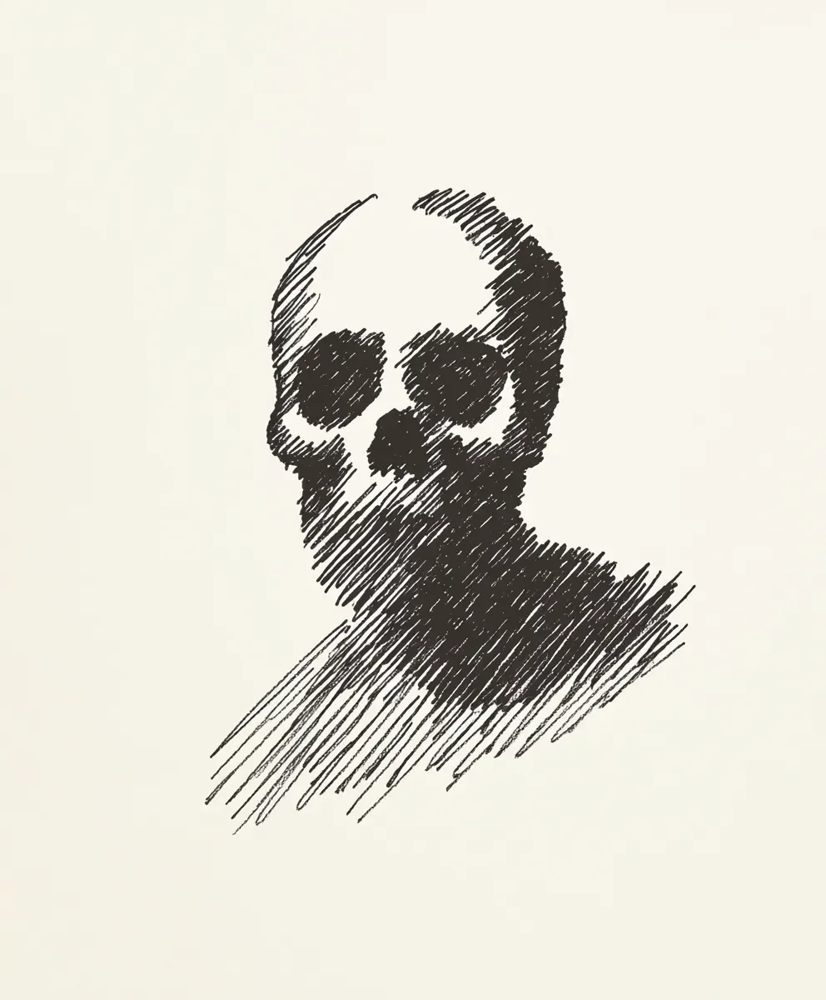

우리는 집 벽에 가족사진을 걸어본 적이 없었다 - 사진을 찍지 않아서가 아니라, 모든 사진마다 그 어두운 형체가 우리 뒤에 드리워져 있었기 때문이다. 그 형체의 텅 빈 얼굴은 앞으로 일어날 일을 예고하는 것 같았다.
[We never had family photos on our walls - not because we didn’t take them, but because in every single one, that same dark shape loomed behind us, its hollow face a promise of what was to come.]
지금 그 사진들은 다락방의 상자 속에 있다. 누렇게 변색되고 모서리가 말려있는 사진들. 각각의 사진은 모두 같은 이야기를 들려준다: 생일, 졸업식, 결혼식 - 모든 사진에는 해골 같은 얼굴을 한 그림자 형체가 다음 희생자가 될 사람의 어깨 뒤에 맴돌고 있다. 그것은 시대별 사진마다 다르게 나타난다 - 다게레오 타입에서는 수은과 은이 섞인 얼룩처럼 보이고, 폴라로이드에서는 번지는 그림자로 잡혔으며, 디지털 사진에서는 직접 보지 않을 때 움직이는 것 같은 손상된 픽셀로 나타난다. 결혼식을 올린 지 3개월 만에 버려진 채석장 바닥에서 차가 발견된 애들레이드 대고모. 대학 졸업식 이후 40일 만에 잠긴 아파트에서 발견된 토마스, 모든 거울이 산산조각 나 있었고 얼굴에는 순수한 공포가 얼어붙어 있었다.
[The photos sit in a box in the attic now, yellowed and curling at the edges. Each one tells the same story: birthdays, graduations, weddings - all marked by that shadowy figure with its skull-like face hovering just behind the shoulders of whoever would die next. The thing appears differently in each era’s photographs - daguerreotypes show it as a smudge of mercury-silver, Polaroids capture it in bleeding shadows, and in digital photos, it manifests as corrupted pixels that seem to move when you’re not looking directly at them. Great-aunt Adelaide at her wedding, three months before they found her car at the bottom of an abandoned quarry. Thomas at his college graduation, forty days before they found him in his locked apartment, every mirror in the place shattered, and that look of pure terror frozen on his face.]
어머니가 지난 봄에 사라지신 이후로 나는 우리 가족의 역사를 강박적으로 연구해왔다. 그 패턴은 1876년 10월 13일로 거슬러 올라간다. 그때 나의 고조부께서 미시간 구리 산지에서 그 거래를 하셨다. 그분은 자신이 영리하다고 생각하셨다. 퀸시 광산의 가장 깊은 갱도에서 나타난 것과 거래를 했는데, 그것의 형체는 횃불 사이의 어둠으로 이루어져 있었다. 그것은 광석과 태고의 땅 냄새가 나는 속삭임으로 이야기했다. 그 생물체는 “미래의 부탁” 하나를 대가로 엄청난 부를 약속했다. 그 바보는 동의했다. 구리 광산으로 부자가 되긴 했지만, 그 존재가 대가를 받으러 왔을 때는 돈을 원하지 않았다. 그것이 원한 것은 대대로 이어질 고통이었다.
[I’ve studied our family’s history obsessively since Mom disappeared last spring. The pattern stretches back to October 13, 1876, when my great-great-great grandfather made that deal in Michigan’s Copper Country. He thought he was clever, bargaining with something that emerged from the deepest shaft of the Quincy Mine, its form assembled from the darkness between torch flames. It spoke in whispers that carried the metallic tang of ore and ancient earth. The creature promised wealth beyond measure in exchange for “a future favor.” The fool agreed. The copper mine made him rich, but when the entity came to collect, it didn’t want money. It wanted generations of suffering.]
하지만 그것에게는 규칙이 있다. 그게 더 끔찍한 점이다 - 우리를 파괴하는 그 체계적인 방식이. 항상 먼저 사진에 나타나 다음 희생자가 누구인지 경고한다. 그 다음엔 곡괭이가 돌을 치는 것 같은 속삭임이 들리고, 마치 살아나는 화가의 스케치처럼 그림자가 교차되는 패턴으로 움직이며, 구리 냄새가 방에서 방으로 따라다닌다. 가장 특징적인 것은 희생자를 표시하는 방식이다 - 피부에 구리빛 멍이 생기는데, 그 모양이 원래 광산 갱도의 배치도와 같다. 첫 출현부터 희생자를 데려가기까지 정확히 33일이 걸린다 - 거래가 이루어진 광산의 각 층수마다 하루씩. 나는 매번 정확히 세어보았기 때문에 안다. 33일 동안의 정신적 고문, 사랑하는 사람이 마지막을 맞이하기 전까지 서서히 현실감각을 잃어가는 것을 지켜봐야 하는 시간.
[The thing has rules, though. That’s what makes it worse - the methodical way it destroys us. It always appears in photographs first, a warning of who’s next. Then come the whispers that sound like picks striking stone, the shadows that move in crosshatch patterns like an artist’s sketch coming to life, the smell of copper that follows you from room to room. Most distinctive is how it marks its victims - copper-colored bruises appear on their skin in the pattern of the mine’s original shaft layout. It takes exactly thirty-three days from first appearance to claim its victim - one day for each level of the mine where the deal was struck. I know because I’ve counted every single time. Thirty-three days of psychological torture, of watching someone you love slowly lose their grip on reality before the end.]
어젯밤, 여동생이 자신의 미술 전시회 오프닝에서 찍은 셀카를 보내왔다. 그녀 뒤에 서 있는 어두운 형체에 대해 말할 용기가 나지 않았다. 그것의 모습은 내가 지금까지 본 것 중 가장 선명했다. 사진 속에서 그것의 해골 같은 얼굴이 마치 살아있는 잉크처럼 배경으로 번져가는 교차된 어둠 속에서 나타났다. 그녀에게 경고하는 대신, 나는 날짜를 세기 시작했다. 33일. 32일. 31일…
[Last night, my sister texted me a selfie she took at her art show opening. I didn’t have the heart to tell her about the dark shape standing behind her, its form more solid than I’ve ever seen it before. In the image, its skull-face seems to emerge from the shadows themselves, the crosshatched darkness of its form bleeding into the background like living ink. Instead of warning her, I started counting days. Thirty-three. Thirty-two. Thirty-one…]
하지만 이번에는 달라질 것이다. 나는 고조부의 일기장 페이지 사이에서 무언가를 발견했다 - 광물 흙 냄새가 나는 구리빛 갈색 잉크로 쓰여진 의식이었다. 그 페이지들은 그 존재가 원래 광산의 구조에 묶여 있다는 것, 그것의 힘이 한때 구리가 흘렀던 것과 같은 맥을 따라 흐른다는 것을 상세히 설명하고 있다. 어쩌면, 정말 어쩌면, 그 오래된 터널들을 영원히 무너뜨림으로써 이 저주를 깰 수 있을지도 모른다. 하지만 그 빽빽한 글자들을 연구할 때마다, 내 방 구석에서 무언가가 움직이고, 마치 그것이 이 모든 것이 어디서 시작되었는지 상기시키는 것처럼 곡괭이가 돌을 치는 소리가 들리는 것 같다. 결국, 희망이란 그것의 무기고에 있는 또 다른 도구일 뿐, 피할 수 없는 최후가 찾아올 때 그 순간을 더욱 달콤하게 만드는 또 다른 방법일 뿐이다. 그리고 내 방의 그림자 속에서, 나는 그 익숙한 교차된 선들이 형성되기 시작하는 것을 본다.
[But this time will be different. I’ve found something in great-great-great grandfather’s journal, hidden between the pages - a ritual written in copper-brown ink that smells of mineral earth. The pages detail how the entity is bound to the original mine’s geometry, how its power flows through the same veins as the copper once did. Maybe, just maybe, there’s a way to break this curse by collapsing those ancient tunnels once and for all. Though every time I study those cramped letters, something shifts in the corners of my room, and I swear I can hear the sound of picks striking stone, as if the thing is reminding me where this all began. After all, hope is just another tool in its arsenal, another way to make the inevitable that much sweeter when it finally comes. And in the shadows of my room, I see those familiar crosshatched lines beginning to form.]